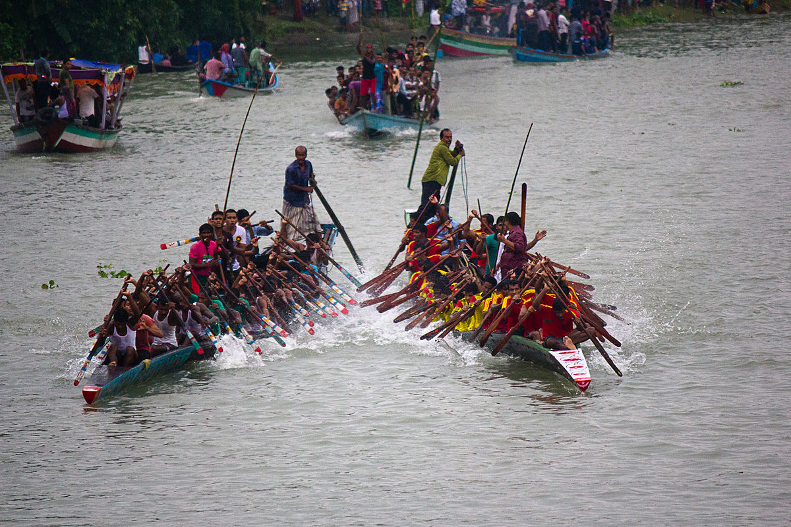
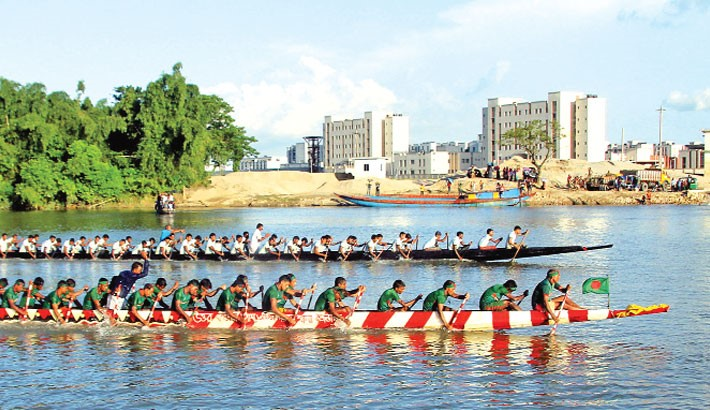

Nouka Baich (নৌকা বাইচ)
The ultimate traditional water sport of Bengal — an intoxicating celebration of collective rhythm, aquatic speed, and folk heritage across Bangladesh's riverways.
Cultural Overview & Significance
Bangladesh is a riverine nation crisscrossed by hundreds of rivers originating from the Himalayan foothills. Historically, boats served as the sole mode of transportation during the heavy monsoon season, giving rise to vibrant aquatic festivals centered around rivercraft.
Nouka Baich (Boat Racing) stands as a core element of Bengal's folk culture. It demonstrates the boatmen's physical prowess, synchronization, and technique in driving long wooden crafts at maximum speed through open waters. Today, it remains a thrilling visual spectacle that unites farmers, workers, and rural communities along riverbanks like the Surma, Kushiyara, Khowai, and Meghna.
Etymology & Historical Lineage
Etymologically, the term Baich derives from the Persian word for bet or competition (bet > baij > baich). Historical traces show boat racing techniques spreading from ancient Mesopotamia (around 2000 BC on the Euphrates River) and Egypt's Nile River.
During the Middle Ages and Mughal rule, Muslim Nawabs, Subahdars, and local landlords maintained naval fleets (such as sleek Chhip boats) to protect coastal regions against Magh and Harmad pirates or fight imperial battles. They organized river races as both naval training and royal entertainment.
Folk Legends of Origin
- The Legend of Jagannath Dev: Originating from the ritual bath festival (Snan Yatra) of Lord Jagannath, where boatmen engaged in intense speed races across the river to safely transport pilgrims.
- The Legend of Pir Gazi: In the early 18th century, devotees rushed in small dinghies across a churning Meghna River to reach Pir Gazi. As the river swelled, surrounding boats raced side-by-side to reach the holy man, sparking a lasting racing tradition.
Regional Boat Crafting & Typography
Racing boats are custom-built by expert village carpenters using durable local timbers like Sal, Sheel Koroi, Garjan, Jarul, and Chambul. Their long, narrow profiles cut through water effortlessly. The prows are ornately decorated with peacock heads, swan beaks, or bird bills and painted in bright motifs.
| Boat Type | Primary Districts | Dimensions & Structural Features |
|---|---|---|
| Kosha | Dhaka, Mymensingh, Gafargaon | 150 to 200 ft long; narrow body with straight front and back ends. |
| Sarengi | Sylhet, Comilla, Brahmanbaria, Ajmiriganj | 150 to 200 ft long, 5 to 6 ft wide; flat prow/stern resembling a duck's beak 2–3 ft above water. |
| Goyna | Dhaka, Faridpur | 100 to 125 ft long, 8 to 9 ft mid-breadth; elevated back (4–5 ft) and low front (3 ft). |
| Sampan | Chittagong, Sandwip, Lower Noakhali | Ship-like curved architecture built specifically for coastal marine waters. |
Race Format, Rules & Rhythmic Mechanics
- Race Distance: National and traditional competitions typically run over a designated 650-meter course, with 10-meter gaps maintained between neighboring boats.
- Crew Capacity: Manned by teams ranging from 7, 25, 50, up to 100 rowers sitting in parallel rows.
- Preparation Rituals: Rowers purify themselves, wear matching uniform jerseys/vests, and tie vibrant matching bandanas around their heads.
- The Gaien (Lead Singer): The conductor/lead singer sits at the prow (Golui) or middle. Accompanied by bronze gongs (kasar), drums (dhol), and cymbals (kartal), he sets the tempo.
- Rhythmic Chant: Rowers pull oars in tight unison to rhythmic victory roars like “Hoi Hoi Hoiya Hoi Hoiya” to maximize boat momentum.
- Poetic Boat Titles: Boats carry proud names such as Sonar Tori (Golden Craft), Pangkhiraj (Winged Steed), Mayurpankhi (Peacock Boat), Jharer Pakhi (Storm Bird), and Tufan Mail.
Sari Gaan: The Musical Engine
A central feature of Nouka Baich is the singing of Sari Gaan — traditional folk work songs that maintain rowing sync and boost stamina. Prominent mystic bards across Bengal have authored legendary compositions specifically for boat racing:
- Shah Abdul Karim: "Allar Naam, Nabir Naam Loiya Re", "Kon Mestori Nao Banailo", "Mohajone Banaiyechhe Mayurpankhi Nao"
- Hason Raja: "Chharilam Hasoner Nao Re"
- Syed Shah Noor: "Pak Pani Chiniya Nao Baio"
- Taimur Raja Chowdhury: "O Sona Bhabi Go"
- Traditional Folk Airs: "Rongila Maoi Go", "Sonamukhir Jamai Aischhe"
Visual Archive & Racing Gallery


Modern Revival & Bangladesh Rowing Federation
To protect this heritage from fading due to river siltation and encroachment, the Bangladesh Rowing Federation was established in 1974. It bridges ancient folk traditions with modern international rowing standards, hosting annual national races and international competitions to keep the spirit of Nouka Baich alive for future generations.